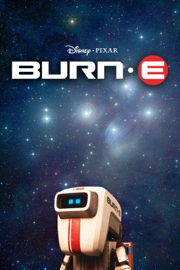

#1119 BURN-E
 
 IMDB-Wertung: 7.7 / 10
IMDB-Wertung: 7.7 / 10  Metascore: 0
Metascore: 0 
Als WALL-E und EVE um das Axiom-Raumschiff flogen, dann durch eine Tür dieses betraten und dabei einen schweißenden Roboter aus dem Schiff aussperrten. Dieser Charakter ist ein Reparaturroboter, genannt BURN-E (Basic Utility Repair Nano Engineer), seine Fäuste gegen die Tür schlagend und schließlich realisierend, dass er ausgesperrt ist und nun außerhalb des Raumschiffes festsitzt.
Jahr: 2008
Dauer: 8 Minuten
FSK: 0
Land: USA Studio: Buena Vista Home EntertainmentTonspuren:
Untertitel:
Auflösung: 1080p (1920x800) Größe: 699 MB
Genre: Animation/Trick, Kurzfilm, Abenteuer, Familie, Sci-Fi
Regisseur: Angus MacLane
Drehbuch: Angus MacLane, Andrew Stanton, Derek Thompson, Stephen King, Brandon Onstott
Soundtrack: J.A.C. Redford
Darsteller:
- Ben Burtt als WALL·E / M-O , uncredited
 Jeff Garlin als Captain , uncredited
Jeff Garlin als Captain , uncredited Elissa Knight als EVE , uncredited
Elissa Knight als EVE , uncredited- Angus MacLane als BURN-E
- Tessa Swigart als Maintenance Computer
- MacInTalk als AUTO , uncredited
Datei: X:\Kinder Disney HD\WALL-E\BURN-E (2008, FSKo.Al., 1920x800).mkv seit 21.05.2015
Festplatte: Kinder-Filme+Trick
 Alle Filme aus Gruppe 'Kinder Disney HD\WALL-E'
Alle Filme aus Gruppe 'Kinder Disney HD\WALL-E'